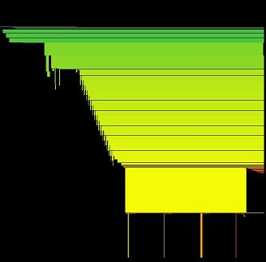

What is HeapDraw / HeapTracer?

HeapDraw was originally created as a postmortem analisys tool, to see how the heap evolved during the life of a process. The idea is that although we may be used to textual output, like that of ltrace or a malloc/free hooking library, it's much better to see it graphically (in fact I used to make drawings by hand until I realized "WTF am I doing? I have a computer to do it for me!").
HeapTracer is the new name, after it became a runtime analisys tool.
In the image you can see an example. It's the heap of ping. The 4 spikes correspond to the 4 packets sent. Before the first spike you can see the initialization, and after the last, the evolution of the heap for the final phase.
In this release you can find four different versions of HeapDraw/HeapTracer, all including full sourcecode:
- Windows postmortem native version.
- Linux postmortem native version.
- IDA plugin, for doing runtime analisys (only Windows version for Windows appliations)
- An unfinished python version.
If you are an IDA fan, and like developing for it, you may find interesting the IDA Plugin version, as it's a relatively complex example of an IDA debugging plugin which opens an OpenGL window to make drawings.
Source code and precompiled versions
We've packaged the four versions with their sourcecode and e brief tutorial in a single file:
- Latest stable release, updated on July 7, 2007 – gzip'd tarball.
Compiling the source and installing
The package contains a separate directory for every version. Each of this directories contains specific instructions on how to build and run the tool
Documentation
- Simple tutorial.
- General README
- Example output file (900k) for the tutorial. Not included in the package
- Linux native README
- Windows standalone README
- IDA plugin README
Licensing
This software is provided under a slightly modified version of the Apache Software License. Feel free to review it here and compare it to the official Apache Software License.
Contact Us
Whether you want to report a bug, send a patch or give some suggestions on this package, drop us a few lines at oss@coresecurity.com.
Description
- Title
- HeapDraw
- Release date
- 2007-06-29
- License type
- Apache 1.1